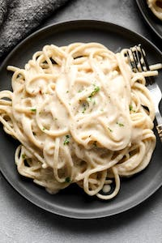

Vegan Cream Cheese Alfredo

Description
This delicious vegan alfredo has no dairy, no nuts, and no cauliflower
Make this cream cheese alfredo in one page in just 20 minutes
Ingredients
- 1/4 cup vegan butter
- 1 cup non-dairy milk
- 1/4 cup vegan cream cheese
- 1/2 tsp of garlic powder
- 1/2 tsp of italian seasoning
- 1/8 tsp of salt
- 1/8 tsp of black pepper
- 1/2 cup of vegan parmesan cheese
- red pepper flakes to taste
- (optional) 1sp lemon zest
- cooked pasta
Steps
- Add the butter, milk, and cream cheese to a large skillet. Cook over medium heat and whisk until butter has melted.
- Add the garlic powder, italian seasoning, salt, and pepper. Whisk until smooth.
- Whisk in the parmesan until melted. If using lemon zest, stir in.
- Serve with cooked pasta. Sprinkle in red pepper flakes. Enjoy!